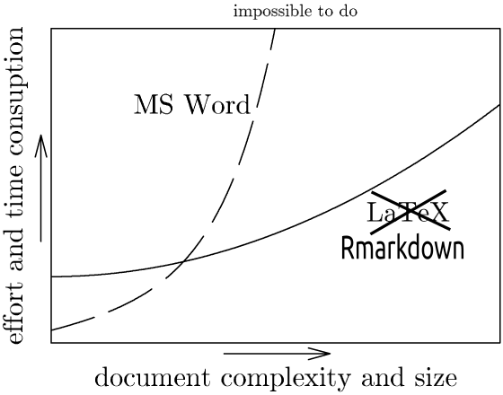
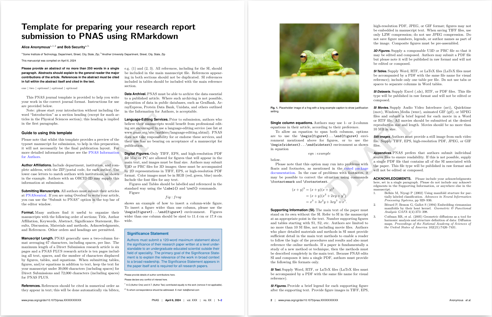

install.packages("rticles")14 Rapports RMarkdown
L’article scientifique est la forme de communication la plus répandue. C’est la forme de communication officielle, qui permet de faire connaître les résultats de ses recherches et qui est utilisée pour référencer les travaux des autres. Heureusement, il existe des outils pour faciliter la rédaction d’articles scientifiques et leur intégration dans le workflow d’un projet. De cette façon, il est possible de rendre les rapports reproductibles, ce qui est pratique lorsqu’on veut modifier une figure sans que la mise en page ne change ! Dans ce chapitre, nous allons voir comment utiliser RMarkdown pour rédiger des rapports scientifiques.
Les bases de RMarkdown sont présentés dans le Chapitre 8. Il est certain que débuter avec RMarkdown est plus exigeant que d’utiliser Word. Parfois il est préférable d’utiliser Word, particulièrement pour les courts documents qui ne demandent pas beaucoup de travail. Cependant, les documents qui doivent évoluer dans le temps, qui sont longs, qui exigent la collaboration ou qui demandent beaucoup de travail de mise en page sont plus facilement gérés avec RMarkdown. De plus, RMarkdown permet de faire des rapports reproductibles, qui reposent sur un gabarit, ce qui est un avantage non négligeable. Ainsi, il est possible de ne s’occuper que du contenu et de laisser le style à RMarkdown.

14.1 Un rapport stylé avec rticles
Il existe plusieurs gabarits pour RMarkdown, qui permettent de créer des rapports stylés. Le package rticles permet d’installer plusieurs gabarits, dont certains sont très utiles pour les rapports scientifiques. Pour installer le package rticles, il faut utiliser la commande suivante :
Un gabarit peut être sélectionné à partir du menu File > New File > R Markdown... dans RStudio. Il est possible de choisir un gabarit parmi ceux disponibles dans le package rticles et de l’adapter à ses besoins. Par exemple, le gabarit PNAS Journal Article ressemble à un article scientifique publié dans la revue PNAS :

Plusieurs fichiers sont créés lors de la création du gabarit. En plus du .Rmd, on retrouve un .bib pour la blibliographie, un .cls et .sty pour les aspects visuels. Il est possible de modifier le style du rapport en modifiant certains fichiers.
Personnaliser le rapport
Choisir un gabarit générique
Le gabarit PNAS Journal Article est pratique, il produit automatiquement un rapport en deux colonnes. Il est possible de changer le gabarit pour n’avoir qu’une colonne en modifiant le YAML du rapport .Rmd :
pnas_type: pnasmathematicsPersonnaliser le style
Il est possible de personnaliser le style du rapport en modifiant les fichiers .cls et .sty. Par exemple, il est possible de changer la couleur des liens hypertextes en modifiant la ligne suivante du fichier pnas-new.cls :
%% Set URL link color & font
\renewcommand\UrlFont{\color{black}\sffamily}14.2 Accéder aux données
Il est possible d’accéder aux données dans un rapport RMarkdown. Pour ce faire, il faut charger les données dans le rapport et les afficher. Par exemple, pour charger un fichier CSV et afficher les premières lignes :
# Charger les données
data <- read.csv("data.csv")
# Afficher les premières lignes
head(data)Toutefois, cette façon de faire ne permet pas d’établir la dépendance entre le rapport et les données. Il est préférable de charger les données produites dans un autre target à l’aide de tar_read ou tar_load :
# Charger les données
data <- tar_read("nomDuTarget")
# Afficher les premières lignes
head(data)14.3 Référencer une figure ou une image
Il est possible de référencer une figure dans un rapport RMarkdown. Pour ce faire, il faut ajouter un label à la figure, puis utiliser la fonction ref pour faire référence à la figure.
Créer une figure avec un label :
'''{r figs, fig.cap="\\label{fig:plot1}Légende figure.", fig.width=7, fig.height=6}
# Créer la figure
plot(data$X, data$Y)
'''
'''{r figs, fig.cap="\\label{fig:plot1}Légende figure.", fig.width=7, fig.height=6}
# Insérer une image
{width=50% height=40%}
'''Faire référence :
Je fais référence à la Figure \ref{fig:plot1} et à l'image \ref{fig:img1}..center[↓]
Je fais référence à la Figure 1 et à l'image 1.14.4 Bibliographie et références
Il est possible de citer des articles dans un rapport RMarkdown. Pour ce faire, il faut ajouter un fichier .bib contenant les références, puis utiliser la clé unique d’un article pour le citer.
Le fichier .bib est spécifié dans le YAML du rapport et contient les références suivantes :
@inproceedings{belkin2002using,
title={Using manifold stucture for partially labeled classification},
author={Belkin, Mikhail and Niyogi, Partha},
booktitle={Advances in neural information processing systems},
pages={929--936},
year={2002}
}
@article{berard1994embedding,
title={Embedding Riemannian manifolds by their heat kernel},
author={B{\'e}rard, Pierre and Besson, G{\'e}rard and Gallot, Sylvain},
journal={Geometric \& Functional Analysis GAFA},
volume={4},
number={4},
pages={373--398},
year={1994},
publisher={Springer}
}Citer un article du fichier .bib :
Je fais référence à la première entrée du fichier.bib @belkin2002using.Pour référencer plusieurs références:
Je fais référence à plusieurs références [@belkin2002using;@berard1994embedding]Il est recommandé d’utiliser un logiciel de gestion de références comme Zotero ou Mendeley pour gérer les références. Ces logiciels permettent d’exporter les références dans un fichier .bib à partir de votre librairie d’articles. Il est également possible d’exporter les références depuis Google Scholar et de les copier-coller dans un fichier .bib, mais cela est moins pratique.